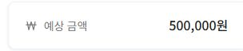
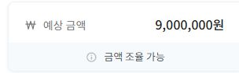
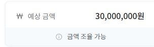

실제 의뢰 9건에서 금액과 요구사항을 일부 발췌했습니다. 제목은 수업용 요약이며, 식별 정보는 제외했습니다.
예상 금액은 공고의 예산이며 실제 계약액은 아닙니다. 작업 예상 기간은 제작에 예상한 기간의 길이입니다. 아래 자료는 의뢰의 범위를 비교하는 사례로 읽습니다.
두 사례로 범위 비교하기
먼저 01 견적 기능과 07 다중 매장 시스템을 비교해 보세요. 화면에 계산 결과를 보여 주는 일에 더해, 실제 서비스에서는 어떤 자료·권한·운영 작업이 필요한지 찾습니다. 아홉 개를 모두 읽을 필요는 없습니다.
다른 사례 골라 보기 · 9개
오늘 Java로 만들 범위
원문의 언어와 납품 환경은 의뢰마다 다릅니다. 오늘은 수량·컬러 인쇄·배송비를 계산하는 Main.java를 만들고 사용법·검수 기록과 함께 전달합니다. 실제 고객 의뢰가 아닌 수업용 과제이며, 로그인·실결제·운영 서버는 이번 제작 범위에 포함하지 않습니다.
사례 01 · 수업용 요약 제목
옵션 견적 계산 기능
30만 원
공고에 적힌 예상 금액 · 작업 예상 기간 1일
원문의 예상 금액 발췌원문 요구사항 발췌 · 이미지를 누르면 크게 볼 수 있습니다.요구사항 발췌를 글로 읽기
2-2. 조건부 결과 노출: 로그인 회원에게는 견적가를 즉시 노출하고, 비회원에게는 고객센터 문의를 유도하는 분기 로직을 적용합니다.
강사 해설 · 원문과 구분해 읽습니다.
작게 나눠 볼 수 있는 기능
옵션별 금액을 계산하는 화면
실제 의뢰에서 함께 확인할 일
기존 서비스에 기능 삽입, 회원·비회원 노출 분기, PC·모바일 지원, 소스 납품과 유지보수 논의가 함께 있다.
사례 02 · 수업용 요약 제목
데이터 검색 앱
50만 원
공고에 적힌 예상 금액 · 작업 예상 기간 2일
원문의 예상 금액 발췌

원문 요구사항 발췌 · 이미지를 누르면 크게 볼 수 있습니다.요구사항 발췌를 글로 읽기
3. 비기능적 요구사항
3-1. 속도: 검색어 입력 시 결과가 지연 없이 빠르게 나와야 함
3-2. 접근성: 남녀노소 누구나 쉽게 사용할 수 있는 직관적인 UI
강사 해설 · 원문과 구분해 읽습니다.
작게 나눠 볼 수 있는 기능
준비된 단어표에서 검색하고 결과 표시
실제 의뢰에서 함께 확인할 일
제공된 실제 자료, Android·iOS 앱 납품, 데이터 관리 방법까지 요구한다.
사례 03 · 수업용 요약 제목
발주 데이터 변환 자동화
80만 원
공고에 적힌 예상 금액 · 작업 예상 기간 5일
원문의 예상 금액 발췌원문 요구사항 발췌 · 이미지를 누르면 크게 볼 수 있습니다.요구사항 발췌를 글로 읽기
수행 범위
- 요구사항 분석: 현재 발주서 엑셀 파일의 구조 및 데이터 패턴 분석
로직 설계: 시공 유형 판단 및 옵션 코드 매핑 규칙 정의
엑셀 자동화 프로그램 개발: VBA(매크로)를 활용한 자동화 기능 구현
테스트 및 안정화: 다양한 주문 케이스에 대한 테스트 및 디버깅
사용자 매뉴얼 작성: 프로그램 실행 및 관리 방법에 대한 간단한 안내서 제공
강사 해설 · 원문과 구분해 읽습니다.
작게 나눠 볼 수 있는 기능
사이즈 조건에 따라 옵션 코드를 자동 변환
실제 의뢰에서 함께 확인할 일
실제 발주서 형식 보존, 여러 상품 코드, 정보 누락 처리, VBA 실행 환경과 사용 안내가 필요하다.
사례 04 · 수업용 요약 제목
홍보 페이지 제작
100만 원
공고에 적힌 예상 금액 · 작업 예상 기간 7일
원문의 예상 금액 발췌원문 요구사항 발췌 · 이미지를 누르면 크게 볼 수 있습니다.요구사항 발췌를 글로 읽기
필요 요소 :
- 반응형 랜딩페이지 디자인
- 반응형 랜딩페이지 퍼블리싱
강사 해설 · 원문과 구분해 읽습니다.
작게 나눠 볼 수 있는 기능
제공 원고로 반응형 소개 페이지 만들기
실제 의뢰에서 함께 확인할 일
브랜드용·제조사용 2개 페이지, CTA 동작, 디자인 파일과 원본 소스 납품을 요구한다.
사례 05 · 수업용 요약 제목
발주·송장 업무 자동화
900만 원
공고에 적힌 예상 금액 · 작업 예상 기간 45일
원문의 예상 금액 발췌

원문 요구사항 발췌 · 이미지를 누르면 크게 볼 수 있습니다.요구사항 발췌를 글로 읽기
1. 수행 범위
- 프런트엔드 개발 (사용자 대시보드 및 설정 관리)
- 백엔드 개발 (엑셀 파싱, 데이터 매핑 엔진, 이메일 SMTP 연동)
- 데이터베이스 구축 (주문, 제조사, 상품, 로그 관리)
- 배포 및 운영 환경 구성
강사 해설 · 원문과 구분해 읽습니다.
작게 나눠 볼 수 있는 기능
주문 목록을 기준별로 분류하고 결과 출력
실제 의뢰에서 함께 확인할 일
주문·상품·제조사 DB, 여러 엑셀 양식, 이메일 발송과 실패 재처리, 송장 변환, 배포·운영이 연결된다.
사례 06 · 수업용 요약 제목
재고 데이터·처리 로직 개선
1,400만 원
공고에 적힌 예상 금액 · 작업 예상 기간 60일
원문의 예상 금액 발췌원문 요구사항 발췌 · 이미지를 누르면 크게 볼 수 있습니다.요구사항 발췌를 글로 읽기
2-2. 데이터 정합성 복구 및 검증
기준 시점 실재고 재설정 및 전수 재실사 데이터 마이그레이션 (음수 재고 정상화)
재고 실사 수량 반영 및 안전재고 경고(정상/주의/부족) 상태 계산 로직 검증 및 보완
불량 폐기 및 사용 불가 처리 시 실재고 차감 로직 신규 연결
2-3. 자재 목적별 수동 입출고 및 통합 재고 이력 원장 구축
생산, 샘플, 폐기 등 자재 목적별 수동 출고 및 입고 조정 신규 UI 및 로직 구축
모든 재고 증감 지점(출고, 예약, 실사, 불량, 수동 입출고)의 이력을 기록하는 DB 스키마 신설
품번, 변동 유형, 수량, 사유 등 통합 조회 화면 구축
강사 해설 · 원문과 구분해 읽습니다.
작게 나눠 볼 수 있는 기능
판매 한 건의 재고 차감·기록 확인
실제 의뢰에서 함께 확인할 일
여러 출고 경로의 중복 차감 방지, 과거 음수 재고 복구, 동시 요청 처리, 운영 데이터 보호와 통합 QA가 필요하다.
사례 07 · 수업용 요약 제목
다중 매장 판매·재고 시스템
3,000만 원
공고에 적힌 예상 금액 · 작업 예상 기간 80일
원문의 예상 금액 발췌

원문 요구사항 발췌 · 이미지를 누르면 크게 볼 수 있습니다.요구사항 발췌를 글로 읽기
2-5. 통계 및 리포트
- 매장별, 모델별 판매 실적 조회
- 기간별 정산 내역 조회
강사 해설 · 원문과 구분해 읽습니다.
작게 나눠 볼 수 있는 기능
한 가게의 판매·재고·매출 흐름 이해
실제 의뢰에서 함께 확인할 일
여러 매장, 관리자·매장별 권한, 기존 기능 분석과 이관, 서버·DB, 정산·통계·운영 문서가 필요하다.
- 임베디드 개발: ESP32-S3 펌웨어
- 회로설계·PCB: 참고 회로 기반 회로설계, PCB 아트웍, 시제품 제작·검증, 잠금장치·센서 등 부품 조달·공급
- SW 개발: 고객 결제 웹(PWA), 관리 서버, 관리자 대시보드, PG 연동
- 인프라 구축·배포: 클라우드 구성과 배포. Git 저장소·클라우드·도메인 계정은 발주사 명의로 생성합니다.
- 테스트·QA: 기구 측과의 합동 통전 시험, 피크 시간대 동시 주문 부하 테스트
강사 해설 · 원문과 구분해 읽습니다.
작게 나눠 볼 수 있는 기능
판매 성공에 따른 재고·상태 변화 이해
실제 의뢰에서 함께 확인할 일
QR 결제, 관리 서버·대시보드, 기기 명령 검증, ESP32 펌웨어·회로·PCB, 현장 운영 시험까지 포함한다.
제안서에는 어디까지 적을까?
교재로 돌아가 만들 기능, 받을 자료, 확인할 결과, 포함·제외할 범위, 납품할 파일을 적습니다. 실제 의뢰에서 필요한 일을 알아보고, 이번 수업에서 완성할 작은 범위를 정해 보세요.